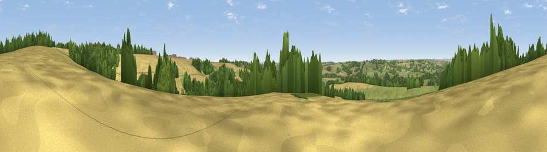

Viewpoint near Little Rissington
#32046 in England · top 66% of its area beats it · near Little RissingtonWhere it is
The exact computed spot (SP 19625 19275). Click the marker for map links.
The view, rendered

A 360° render of this exact spot computed from the terrain model, tree cover and land cover — summer colours, afternoon light, calibrated against photographs of famous viewpoints. Real trees, hedges and buildings will differ in detail.
The panorama
Grey silhouette: terrain skyline in each direction (720 bearings, Earth curvature and refraction included). Dashed green: skyline with trees (+15 m) and buildings (+8 m) as obstacles. Blue strip: how far the ground is visible on each bearing.
Where the view opens
Wedge length = distance to the farthest visible ground on that bearing (vegetation-aware). Rings at 10, 25 and 50 km.
What fills the view
48% cropland · 32% grassland · 18% woodland · 1% built-up ·
Angular shares of the visible panorama (visual magnitude), not map area. Landscape diversity 0.48 (0–1 Shannon).
Key numbers
More beautiful places nearby
The staircase of upgrades: each row has a higher view potential than everything closer. Driving times are estimates from straight-line distance, calibrated against real road routing — check an actual route before setting out.
| Place | Direction | Drive | Score |
|---|---|---|---|
| Viewpoint near Upper Rissington | NNE · 2 km | ~4 min | 56.9 |
| Viewpoint near Wyck Rissington | N · 3 km | ~7 min | 58.7 |
| Viewpoint near Icomb | N · 4 km | ~9 min | 63.9 |
| Viewpoint near Little Rollright | NE · 14 km | ~26 min | 64.2 |
| Viewpoint near Little Compton | NE · 15 km | ~26 min | 67.2 |
| Roel Hill | WNW · 15 km | ~27 min | 67.6 |
| Viewpoint near Sudeley | WNW · 17 km | ~30 min | 68.8 |
| Viewpoint near Hailes | NW · 17 km | ~30 min | 69.6 |
51.87171, -1.71636 · source: screening · position refined by local search. Computed location — check access rights before visiting.